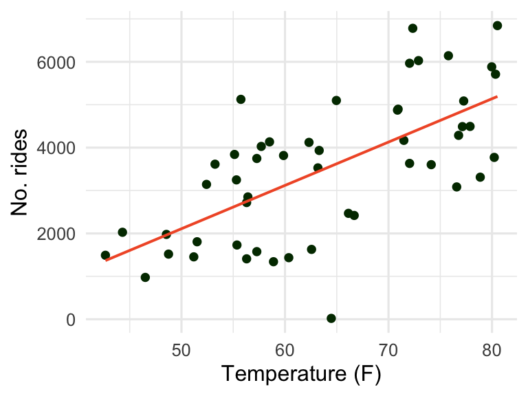
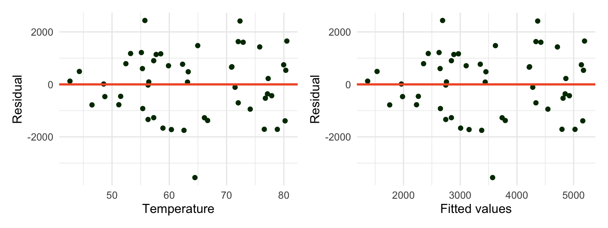
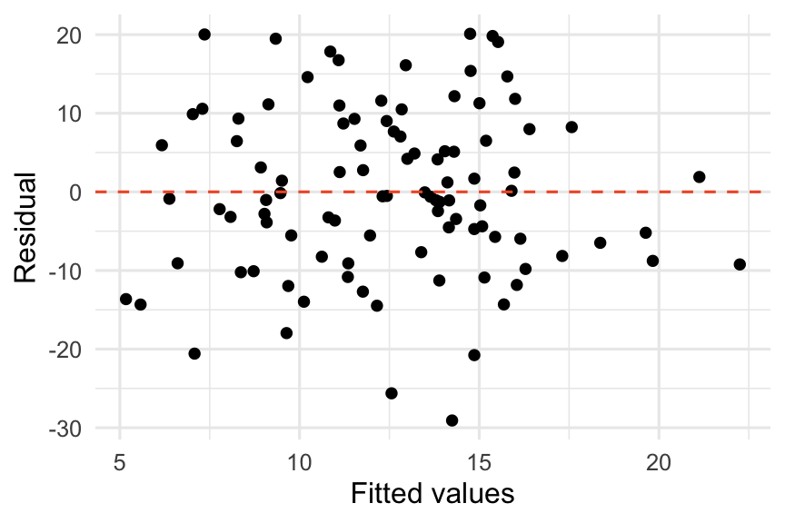
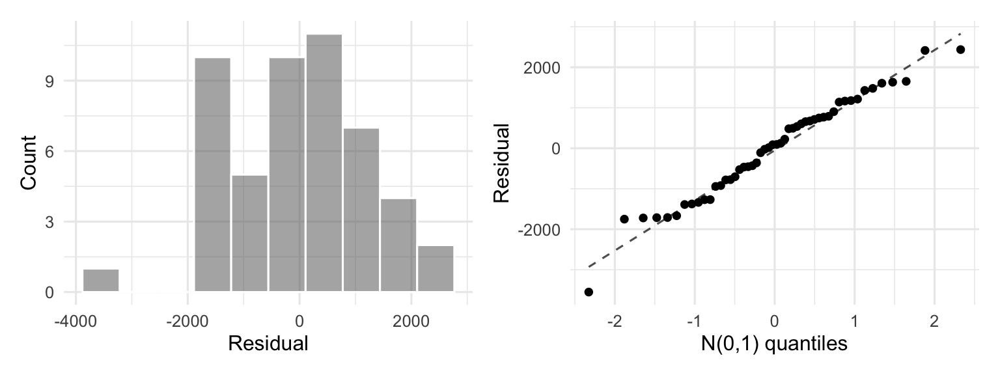
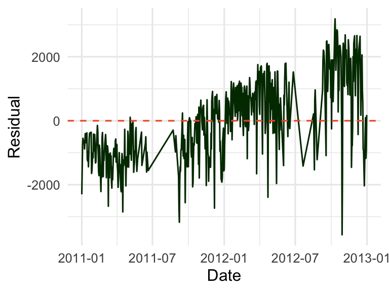
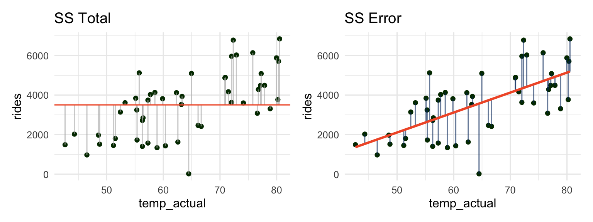
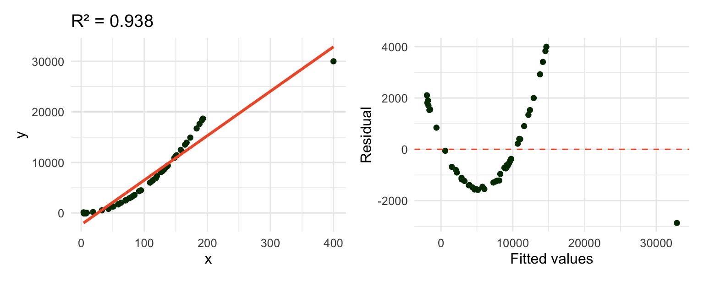

Day 05: Evaluating SLR models
Data for today
We return to the Capital Bikeshare data, this time working with a small random sample of 50 days so that patterns are easier to see by eye.
| term | estimate | std. error | t | p-value |
|---|---|---|---|---|
| Intercept | -2940.400 | 1072.078 | -2.74 | 0.009 |
| temp_actual | 100.995 | 16.567 | 6.10 | <0.001 |
Two definitions of a “good” model
- The model is appropriate, so our inferences (p-values, CIs) are ___________________________
- The x variable does a good job ___________________________ the y variable
Theoretical model: \(y_i = \beta_0 + \beta_1 x_i + \varepsilon_i\) where \(\varepsilon_i \overset{\mathrm{iid}}{\sim} N(0, \sigma^2)\)
Fitted model: \(\widehat y_i = \widehat\beta_0 + \widehat\beta_1 x_i\), so that \(y_i = \widehat y_i + \widehat\varepsilon_i\)
Conditions for inference: LINE
For our p-values and confidence intervals to be trustworthy, the theoretical model above has to be a reasonable description of the data. Check:
- Linear: ___________________________
- Independent and identically distributed errors: ___________________________
- Normally distributed errors: ___________________________
- Equal variance of the errors: ___________________________
Note
These conditions are about the errors, not about the raw x or y variables themselves.
Residuals
Definition: \(e_i = \widehat\varepsilon_i = y_i - \widehat y_i\)
Properties:
- sum to zero \(\Longrightarrow\) mean is ___
- uncorrelated with \(x\) and \(\widehat y\)
- (should be) normally distributed
- \(SD(e_i) = \widehat\sigma \sqrt{1 - \dfrac1n - \dfrac{(x_i - \overline x)^2}{\sum (x_i - \overline x)^2}}\)
Residual plots
For SLR, plotting residuals against \(x\) or against the fitted values \(\widehat y\) shows the same shape (since \(\widehat y\) is a linear function of \(x\)) – either is a valid way to check linearity and equal variance.

A “good” residual plot shows no pattern: residuals bounce randomly around zero with roughly constant spread across the range of fitted values.

TipGroup task
On the whiteboards, sketch a plot of \(y\) vs. \(x\) and the corresponding residual plot that would indicate a violation of
- the linearity condition
- the equal variance condition
Assessing normality
Use a histogram or normal Q-Q plot of the residuals. A “good” Q-Q plot hugs the diagonal reference line closely.

Note
Normality is harder to judge at small sample sizes – even true random draws from a normal distribution can look lumpy or have a wandering Q-Q plot when \(n\) is small. Don’t over-interpret minor wiggles with only 30-50 points.
Assessing independence
Plot residuals against whatever variable might induce dependence (time, location, subject, batch, …). Using the full bikes dataset ordered by date reveals a clear pattern – a strong hint that day-to-day ridership is not independent once we condition only on temperature:

What happens if the conditions aren’t met?
- Linearity: if nonlinear, everything breaks!
- Independence: estimates are still unbiased, but the SEs are typically too small (we have less information than \(n\) independent points suggests)
- Normality: estimates and SEs are still fine, but prediction intervals (which rely on individual points being normal around the mean) are wrong
- Equal variance: estimates are still unbiased, but SEs are wrong – and we don’t know in which direction
What do we do if assumptions are violated?
- Change our assumptions (hard – needs more advanced methods)
- Transform \(y\), \(x\), or both
- Change the type of inference (e.g. bootstrap)
Is x a “good” predictor of y?
Partitioning variability

\[\underbrace{\sum (y_i - \overline y)^2}_{SSTO} = \underbrace{\sum (\widehat y_i - \overline y)^2}_{SSR} + \underbrace{\sum e_i^2}_{SSE}\]
\[\text{total variability} = \text{variability of } \widehat Y\text{'s} \; + \; \text{variability of residuals (}\underline{\hspace{2cm}}\text{)}\]
\[R^2 = \frac{SSR}{SSTO} = \frac{\text{variability of } \widehat Y}{\text{variability of } Y}\]
Note\(R^2\)
\(R^2\) gives the proportion of total variability in \(Y\) explained by the SLR model.
For our small bike sample, \(R^2 =\) 0.436 – about 43.6% of the variability in rides is explained by temperature.
Properties of \(R^2\)
- Between ___ and ___
- Big when \(\sigma\) is small relative to the overall variability of \(y\) (i.e. a big proportion of variability explained by the model)
- For SLR, \(R^2 =\) ___ (where \(r\) is the correlation coefficient between \(x\) and \(y\))
NoteQuick notation reference
| Symbol | Meaning |
|---|---|
| \(r\) | sample correlation coefficient |
| \(\rho\) | population correlation coefficient |
| \(R^2\) | coefficient of determination |
| \(p\) | a population proportion |
| \(\widehat p\) | a sample proportion |
| p-value | \(P(\text{test statistic} \mid H_0)\) |
| \(P(A)\) | probability of event \(A\) |
\(R^2\) dangers: high \(R^2\) doesn’t mean “good fit”

A single high-leverage point drove \(R^2\) up to 0.938 even though the residual plot shows an obvious curve – the linear model is a bad fit! Always check the residual plot, not just \(R^2\).
TipYour turn
Would you trust this model just based on its \(R^2\)? What does the residual plot tell you that \(R^2\) alone can’t?